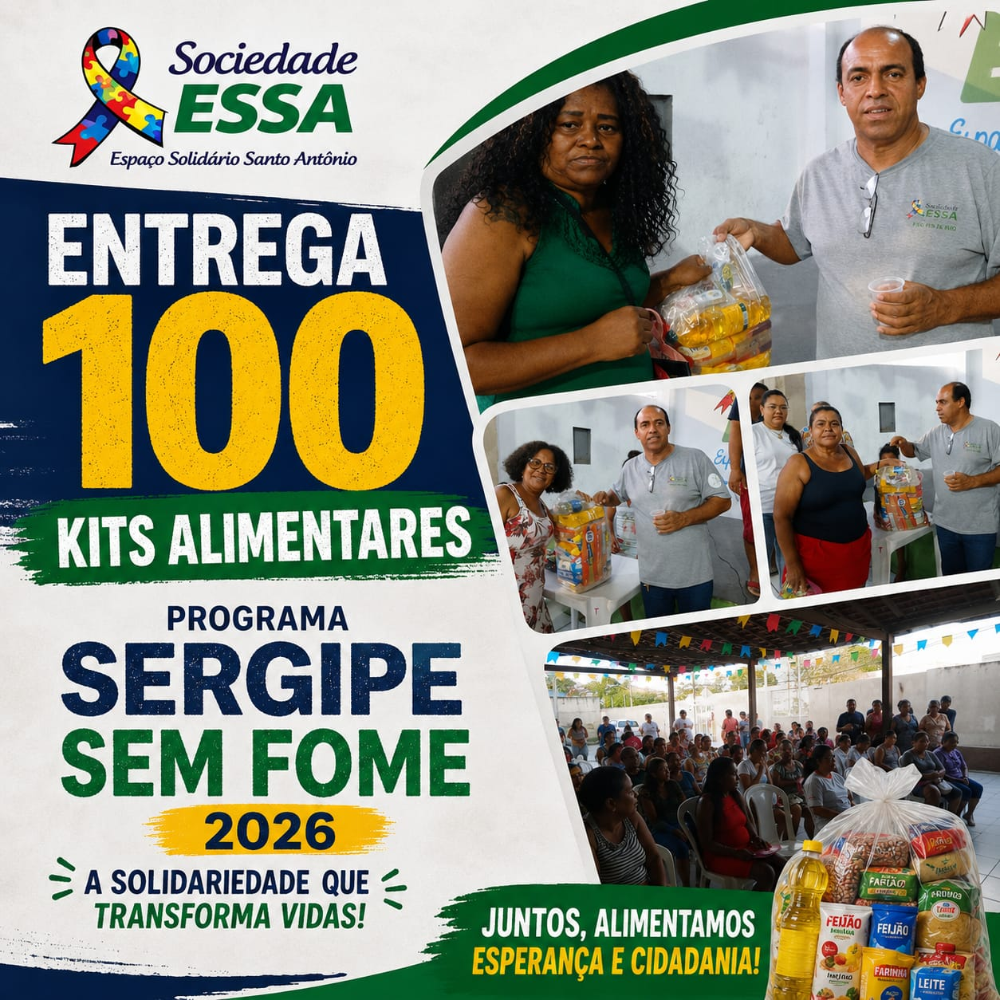

Sociedade do Espaço Solidário Santo Antônio
Solidariedade, inclusão e cidadania transformando vidas.
A Sociedade do Espaço Solidário Santo Antônio — ESSA é uma organização não governamental, sem fins lucrativos, que atua na promoção da assistência social e no desenvolvimento de ações voltadas à inclusão, cidadania, educação, esporte, convivência e fortalecimento de vínculos.
A Sociedade do Espaço Solidário Santo Antônio — ESSA é uma organização não governamental sem fins lucrativos que atua em Aracaju, Sergipe.
A instituição nasceu em 1995 e adquiriu personalidade jurídica em 22 de outubro de 2003.
A ESSA desenvolve atividades sociais e filantrópicas, buscando contribuir para a qualidade de vida da comunidade e encontrar soluções para diferentes necessidades da população.
Sua atuação está voltada principalmente para famílias e pessoas em situação de vulnerabilidade social, incluindo crianças, adolescentes, adultos, idosos e seus familiares.
A instituição desenvolve suas ações tendo como referência a Política Nacional de Assistência Social, a Lei Orgânica da Assistência Social, a Constituição Federal, o Estatuto da Criança e do Adolescente e os princípios do Sistema Único de Assistência Social — SUAS.
Promover assistência social, inclusão e cidadania, desenvolvendo programas, projetos e ações de apoio às famílias e pessoas em situação de vulnerabilidade social.
A ESSA também busca promover cursos, capacitações, atividades comunitárias e ações que contribuam para novas possibilidades de geração de renda e trabalho.
A ESSA desenvolve diferentes ações sociais para atender às necessidades da comunidade.
Distribuição de cestas básicas, kits alimentares e realização de ações de alimentação e acolhimento para pessoas em situação de vulnerabilidade.
Ações de alfabetização destinadas a jovens, adultos e idosos, contribuindo para a inclusão educacional e o exercício da cidadania.
Atividades físicas e esportivas voltadas à promoção da saúde, convivência e desenvolvimento social.
Ações voltadas às famílias de crianças e adolescentes com Transtorno do Espectro Autista — TEA, buscando acolhimento, orientação e acesso a serviços.
Campanhas, bazares, doações e outras iniciativas destinadas às pessoas que mais precisam.
Projeto voltado à alfabetização e inclusão educacional de jovens, adultos e pessoas idosas.
A iniciativa busca contribuir para a autonomia, cidadania e participação social dos participantes.
A ESSA também desenvolve ações relacionadas ao Alfabetiza Sergipe, promovendo oportunidades de alfabetização e inclusão educacional.
Atividade voltada à promoção da saúde, qualidade de vida e convivência entre os participantes.
Atividade esportiva desenvolvida pela instituição como parte das ações de esporte, convivência e desenvolvimento social.
A atividade busca contribuir para o desenvolvimento físico, emocional e social de crianças neurodivergentes, promovendo inclusão e convivência.
Projeto desenvolvido por meio de ações solidárias, incluindo o Bazar Solidário e outras iniciativas de apoio à comunidade.
O projeto busca beneficiar pessoas em situação de vulnerabilidade por meio de doações e disponibilização de roupas, calçados e outros itens.
Ação destinada a oferecer alimentação e acolhimento às pessoas em situação de vulnerabilidade, fortalecendo o compromisso da instituição com a segurança alimentar e a dignidade humana.
A ESSA desenvolve ações direcionadas às famílias de crianças e adolescentes com Transtorno do Espectro Autista — TEA.
As ações incluem acolhimento, orientação e acesso a informações e atendimentos com profissionais, buscando facilitar o acesso a serviços essenciais e fortalecer a inclusão social.
Ao longo de sua atuação, a ESSA desenvolve ações como:
Essas ações são realizadas com a participação da comunidade e com o apoio de parceiros, instituições e pessoas que colaboram com a causa social.
A ESSA acredita que a transformação social é construída de forma coletiva.
As ações da instituição contam com a participação da comunidade e com o apoio de parceiros e instituições que contribuem para a realização dos projetos.
O relatório registra ações e parcerias relacionadas ao Governo de Sergipe, SEASIC e Mesa Brasil, entre outras iniciativas.
Nossas ações em imagens
Aqui serão apresentadas fotos das atividades realizadas pela ESSA.

Você também pode ajudar
A ESSA acredita na força da solidariedade e da participação da comunidade.
Participe das atividades e projetos da instituição.
Sua instituição pode colaborar com o desenvolvimento de projetos sociais.
Contribua para que nossas ações possam alcançar mais pessoas.
Conheça nossas iniciativas e ajude a fortalecer as ações desenvolvidas pela ESSA.
A ESSA valoriza a participação social, a responsabilidade e a transparência na realização de suas atividades.
Nesta área do site poderão ser disponibilizados:
Sociedade do Espaço Solidário Santo Antônio — ESSA
Av. São João Batista, nº 782
Ponto Novo — Aracaju/SE
CEP: 49097-010
05.965.109/0001-87
(79) 98137-5273
sociedadeessa@gmail.com
A solidariedade, a participação da comunidade e o compromisso com as pessoas em situação de vulnerabilidade são fundamentais para a construção de uma sociedade mais justa, acolhedora e participativa.
Solidariedade que acolhe. Inclusão que transforma.